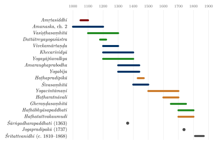

Chapter 7: Haṭha Yoga: The Yoga of Force¶
Haṭha Yoga Pradīpikā 1.1
śrī-ādināthāya namo'stu tasmai
yenopadiṣṭā haṭha-yoga-vidyā
vibhrājate pronnata-rāja-yogam
āroḍhum icchor adhirohiṇīva
Salutations to the glorious Ādinātha (Lord Śiva), who taught the science of Haṭha Yoga, which shines as a stairway for those who wish to ascend to the highest Rāja Yoga.
7.1 The Meaning and Origin of Haṭha Yoga¶
The Sanskrit word haṭha means “force” or “violence”, and haṭhayoga is literally “the yoga of force” — yoga achieved by strenuous physical effort rather than by meditation alone. The earliest texts to use the term do not explain it further, and modern scholars agree that “force” is its original sense, referring to the effortful techniques by which the breath and vital fluids are made to move against their natural course (Mallinson 2011; Birch 2011).
A different, esoteric etymology appears in later sources such as the Yogabīja and Brahmānanda’s 19th-century commentary on the Haṭha Yoga Pradīpikā: ha is the sun and ṭha the moon, so that Haṭha Yoga becomes the union of the solar and lunar currents (piṅgalā and iḍā, or prāṇa and apāna). This reading is widely repeated today, but it is a later reinterpretation, not the origin of the word.
Definition: Haṭha Yoga — Two Meanings
-
Original: Haṭha = force, effort; yoga by strenuous physical technique
-
Later esoteric reading: Ha (sun/prāṇa) + ṭha (moon/apāna) = union of solar and lunar forces
7.1.1 The Origins of Haṭha Yoga: Recent Scholarship¶
Popular accounts often present Haṭha Yoga as an ancient creation of the Nātha yogis. Research over the last two decades, based on the critical editing of previously unpublished manuscripts, has produced a more complex picture (Mallinson and Singleton 2017; Mallinson 2011; Birch 2011).
Before Haṭha. Several of Haṭha Yoga’s characteristic techniques have older roots. Ascetic practices of inversion and breath retention are described in the epics and in early Buddhist texts (where the Buddha rejects breathless meditation as a painful austerity). The subtle body of channels and centres, and the female power later called kuṇḍalinī, were developed in Śaiva and Buddhist Tantric traditions from roughly the 7th century onward (Chapters 5 and 6).
The earliest Haṭha text. The Amṛtasiddhi (“Perfection of the Nectar of Immortality”), probably composed in the 11th century, is the earliest known text to teach the physical techniques later classed as Haṭha — mahāmudrā, mahābandha and mahāvedha — although it does not yet use the word haṭha. It was composed in a Buddhist Tantric (Vajrayāna) milieu, uses Buddhist terminology, and is concerned with preserving bindu (semen, identified with the nectar of immortality) by forcing the breath into the central channel (Mallinson and Szántó 2021). Its world is that of the “completion stage” yogas of the late Buddhist Tantras, which worked with the same channels, winds and drops and survive in the Tibetan traditions (Chapter 9, Section 9.10).
The first use of the name. The Dattātreyayogaśāstra (c. 1200), a Vaiṣṇava work, is the first text to teach a system it calls haṭhayoga. It teaches an eight-limbed yoga, which it says was practised by Yājñavalkya and others, alongside a set of physical “seals” (mudrā), which it says were practised by Kapila and others; it is the mudrā practice that it calls Haṭha. It is notably inclusive: practice alone, it says, brings success, whether one is a brahmin, an ascetic, a Buddhist or a Jain.
The Nātha connection. Texts attributed to the Nātha gurus Gorakṣa and Matsyendra — the Vivekamārtaṇḍa (13th century) and the early Gorakṣaśataka (13th–14th century), and the Amaraughaprabodha — combined these techniques with the raising of kuṇḍalinī from Śaiva Tantra. The Khecarīvidyā (13th–14th century) taught the extreme tongue technique discussed below (Mallinson 2007a). The Nāthas became the order most closely identified with Haṭha Yoga, and Svātmārāma placed his work in their lineage, but they did not invent all of its techniques, and Haṭha methods were also practised by Daśanāmī and Rāmānandī ascetics and by householders.
The classical synthesis. Around 1450 Svātmārāma compiled the Haṭha Yoga Pradīpikā, borrowing verses from some twenty earlier works, and gave Haṭha Yoga its standard form. Later texts — the Śiva Saṃhitā (c. 15th century), Śrīnivāsa’s Haṭharatnāvalī (17th century), the Gheraṇḍa Saṃhitā (c. 1700) and the Brajbhāṣā Jogapradīpakā (1737) — greatly expanded the number of āsanas and purifications.
Two consequences follow for the reader. First, Haṭha Yoga is a medieval, not an ancient, system; its classical texts are roughly contemporary with the Delhi Sultanate and the Mughals. Second, its original aims were physiological-soteriological — control of breath, preservation of bindu, attainment of a deathless, perfected body and of Rāja Yoga (samādhi) — rather than fitness or general health.
7.1.2 The Nātha Sampradāya¶
The Nātha Sampradāya (the Nātha order of yogis) traces itself to the semi-legendary Matsyendranātha (perhaps 10th century) and his disciple Gorakṣanātha (perhaps 12th–13th century); neither can be dated securely. The Nāthas were ascetics, alchemists and wonder-workers, and are prominent in North Indian vernacular literature and legend. Their principal monastery today is the Gorakhnāth Maṭh at Gorakhpur, and the order has centres across India and Nepal (White 1996) (Table 7.1).
| Figure | Period (approx.) | Contribution |
|---|---|---|
| Ādinātha (Śiva) | Mythical | Original teacher, according to the Nātha tradition |
| Matsyendranātha | perhaps 10th c. CE (legendary) | Revered as founder of the Nātha lineage; linked with Kaula Tantra |
| Gorakṣanātha | perhaps 12th–13th c. CE | Systematiser; texts attributed to him include the Vivekamārtaṇḍa |
| Svātmārāma | c. 1450 CE | Compiler of the Haṭha Yoga Pradīpikā |
| Śrīnivāsa | 17th c. CE | Author of the Haṭharatnāvalī |
| Gheraṇḍa | c. 1700 CE | Sage to whom the Gheraṇḍa Saṃhitā is attributed |
7.2 The Three Best-Known Texts of Haṭha Yoga¶
Three texts are the best known, especially through modern translations, although (as shown above) they are neither the earliest nor the only important works:
7.2.1 Haṭha Yoga Pradīpikā (HYP)¶
Compiled by Svātmārāma (c. 1450 CE), the Haṭha Yoga Pradīpikā (Svātmārāma 1970, 1985) (“Little Lamp on Haṭha Yoga”) is the best-known text of Haṭha Yoga. It consists of four chapters (upadeśas); verse counts differ slightly between editions (Table 7.2). Verse numbers in this volume follow the common numbering of 389 verses shown in the table; the GRETIL e-text, which adds verses on the ten yamas and niyamas after 1.16, numbers most of chapter 1 two higher (1.17 here is 1.19 there).
| Ch. | Topic | Verses | Contents |
|---|---|---|---|
| I | Āsana | 67 | Lineage; prerequisites; 15 āsanas; food |
| II | Prāṇāyāma | 78 | Ṣaṭkarma; 8 kumbhakas; signs of progress |
| III | Mudrā | 130 | 10 mudrās; kuṇḍalinī; bandhas |
| IV | Samādhi | 114 | Nāda; laya; stages of samādhi |
7.2.2 Gheraṇḍa Saṃhitā (GS)¶
The Gheraṇḍa Saṃhitā (c. 1700) is structured as a dialogue between the sage Gheraṇḍa and his disciple Caṇḍakāpāli. It presents a saptadhā sādhana — a seven-fold path (Table 7.3).
| No. | Practice | Purpose | Details |
|---|---|---|---|
| 1 | Ṣaṭkarma | Purification (śodhana) | Six cleansing practices |
| 2 | Āsana | Strengthening (dṛḍhatā) | 32 āsanas described |
| 3 | Mudrā | Steadiness (sthiratā) | 25 mudrās |
| 4 | Pratyāhāra | Composure (dhīratā) | Sense withdrawal |
| 5 | Prāṇāyāma | Lightness (lāghavatā) | Breath regulation |
| 6 | Dhyāna | Perception (pratyakṣatā) | Three types of meditation |
| 7 | Samādhi | Detachment (nirliptatā) | Six types of samādhi |
7.2.3 Śiva Saṃhitā (ŚS)¶
The Śiva Saṃhitā (c. 15th century) is the most philosophical of the three texts, integrating Haṭha Yoga with Tantric philosophy and Advaita Vedānta. It is presented as the teaching of Śiva to Pārvatī (Mallinson 2007b).
7.3 The Wider Haṭha Corpus¶
The three texts just described are the tip of a much larger literature. Section 7.1.1 outlined the outcome of recent research; this section looks at the texts themselves. Most of them were known only in unreliable printed editions, or not at all, until the critical editions of the last two decades, many produced by the Haṭha Yoga Project, a research programme at SOAS, University of London, funded by the European Research Council from 2015 to 2020, and published since then in a dedicated series at Pondicherry. Figure 7.1 sets out the approximate dates now accepted; most rest on internal evidence and on which texts quote which, and many are no more than a century or two wide.

7.3.1 How Haṭha Got Its Name¶
Jason Birch’s study of the word haṭha in the texts that predate the Haṭhapradīpikā has changed the understanding of where the term came from (Birch 2011). Its earliest known occurrence is not in a Śaiva or Nāth work but in a Buddhist tantra: the eighteenth chapter of the Guhyasamājatantra, a supplement to the text probably composed by the late eighth century, tells the aspirant who has failed to obtain a visionary experience after repeated six-month periods of practice to resort to “haṭhayoga”, without explaining what that is. The first definition comes from the Buddhist Kālacakra tradition. Puṇḍarīka’s Vimalaprabhā (11th century), a commentary on the Kālacakratantra, describes haṭhayoga as a method to be used when the desired state does not arise: the yogin forces the vital breath into the central channel and arrests the bindu. The Śaiva Tantras, by contrast, though full of the terminology later used in Haṭha texts, hardly use the word until late works.
In the yoga literature of the following centuries haṭha appears almost always beside rājayoga. The second chapter of the Amanaska (11th–12th century) sharply contrasts the two: Rājayoga, the effortless “no-mind” state reached through a gaze and through letting go, is superior; Haṭha Yoga, which requires exertion, is superfluous. Other texts reconciled the rivals in a hierarchy of four yogas — mantra, laya, haṭha and rāja. The Amaraughaprabodha assigns them to four grades of student, giving Mantra Yoga to the weak, Laya to the average, Haṭha to the capable and Rājayoga to the most capable. Svātmārāma then dissolved the hierarchy: in the Haṭhapradīpikā Haṭha and Rāja are interdependent stages of a single path, neither of which succeeds without the other (HYP 2.76); breath-control is justified as the means of stilling the mind (HYP 2.2); and those who practise Haṭha alone, without knowing Rājayoga, are said to labour without result (HYP 4.79). Because his compilation became the standard work, “Haṭha Yoga” became a generic name for the whole tradition.
From the time of the Dattātreyayogaśāstra, what distinguishes Haṭha from other yogas is not breath-control as such, which is found in the Upaniṣads, the epics and the Tantras, but its set of mudrās. On the evidence of the adverbs haṭhāt and haṭhena (“by force”) in these texts, Birch concludes that the “force” of Haṭha Yoga describes what its techniques do — forcing kuṇḍalinī, the downward breath (apāna) or bindu upwards through the central channel — rather than the strain of performing them; the texts themselves often warn against forcing the breath. The “sun and moon” etymology is first found in the Yogabīja (14th–15th century), several centuries after the term arose.
7.3.2 The Early Texts¶
The Amṛtasiddhi. Attributed to Virūpākṣa, the Amṛtasiddhi was composed in an eclectic Buddhist Tantric milieu, probably in the second half of the eleventh century, and its edition by James Mallinson and Péter-Dániel Szántó rests in part on a rare bilingual manuscript in Sanskrit and Tibetan. A shorter related work, the Amṛtasiddhimūla, survives only in Tibetan translation. The Amṛtasiddhi sets out a yogic body organised around the central channel, in which the moon in the head is the source of bindu, identified with the nectar of immortality, and the sun in the belly consumes it; the yogin’s task is to preserve bindu by means of three techniques, mahāmudrā, mahābandha and mahāvedha, which combine a posture, breath-retention and bodily locks. It also classifies practitioners by capacity and uses metaphors drawn from alchemy. Despite its Buddhist origin, its teachings were absorbed into the Nāth and Brahmanical texts, and Svātmārāma took verses from it (Mallinson and Szántó 2021; Birch 2011).
The Dattātreyayogaśāstra. In Mallinson’s critical edition (2024) this work of 193 verses is dated to about 1200 and placed in South India, in a milieu of Vaiṣṇava ascetics; it is framed as the teaching of the god Dattātreya to the sage Sāṅkṛti (Mallinson 2024). It names four yogas — mantra, laya, haṭha and rāja — but devotes most of its length to Haṭha, which it divides into two kinds: the eight-limbed yoga of Yājñavalkya and others, and the physical methods of Kapila and others, the mudrās (Section 7.1.1). It is the first text to put Patañjali’s eight auxiliaries and the Haṭha mudrās side by side, and the earliest known text to teach together most of the mudrās that the Haṭhapradīpikā later made standard, among them viparītakaraṇī and vajrolī. Its terminus ad quem is the Śārṅgadharapaddhati, an anthology compiled in 1363, whose section on yoga quotes it.
The Vivekamārtaṇḍa and the Gorakṣaśataka. The texts attributed to Gorakṣa circulate under a confusing variety of titles — Gorakṣapaddhati, Gorakṣaśataka, Yogamārtaṇḍa and others — for what is substantially one work, which scholars now call the Vivekamārtaṇḍa (Bouy 1994). It teaches a six-limbed yoga (ṣaḍaṅgayoga) without the ethical limbs, describes the cakras and the raising of kuṇḍalinī, and combines the Haṭha mudrās with the Śaiva Tantric subtle body. A different, shorter text, which Mallinson calls the original Gorakṣaśataka, teaches the stimulation of kuṇḍalinī (sarasvatīcālana) and insists that breath-retention always be accompanied by the three bandhas (Mallinson 2012).
Rājayoga texts. The Amanaska (“no-mind”) is a Śaiva work in two chapters, the second older than the first, which teaches the effortless absorption it calls Rājayoga; several of its verses reappear in the Haṭhapradīpikā, which also adopts its name for the goal, amanaska, as a synonym of samādhi (HYP 4.4). The Amaraughaprabodha, ascribed to Gorakṣa, defines Haṭha Yoga simply as the practice of stopping the breath and teaches the three “great” techniques of the Amṛtasiddhi.
Brahmanical eight-limbed yoga. Two texts present yoga in a Vedic, householder frame. The Vasiṣṭhasaṃhitā (12th–13th century) and the Yogayājñavalkya (13th–14th century, which borrows from it and is quoted in the fourteenth-century Sarvadarśanasaṁgraha) teach Patañjali’s eight limbs, but fill them with the breath-control, the subtle body of nāḍīs and vital points, and the elemental fixations (dhāraṇā) of the Tantric and Haṭha traditions; the Yogayājñavalkya is framed as Yājñavalkya’s teaching to Gārgī (Chapter 11, Section 11.5). As Birch observes of the Dattātreyayogaśāstra and of most Haṭha texts, the eight limbs in such works are Patañjali’s in name but Tantric in content: breath-control is described as inhalation, exhalation and retention (pūraka, recaka, kumbhaka), and dhāraṇā becomes the holding of the breath in parts of the body that correspond to the five elements (Birch 2011).
The Khecarīvidyā and the Yogabīja. The Khecarīvidyā (Section 7.14) is devoted to a single mudrā and its mantra. The Yogabīja is partly a compilation of verses from the early texts; it is a dialogue between Śiva and Pārvatī, though later tradition ascribes it to Gorakṣa. It arranges the four yogas as successive stages of a single “great yoga” (mahāyoga).
7.3.3 After the Haṭhapradīpikā¶
Svātmārāma’s compilation was so successful that it eclipsed most of its sources: it survives in a very large number of manuscripts, and several Sanskrit commentaries on it are known. From the sixteenth century a third phase began, in which authors tried to integrate Haṭha Yoga with other systems — Patañjali’s yoga, Tantric yoga, Advaita Vedānta and Āyurveda (Birch 2011). Śivānanda Sarasvatī’s Yogacintāmaṇi (16th–17th century) is a large work that brings together material from the Haṭha texts, the Purāṇas and the Pātañjala tradition; Śrīnivāsa’s Haṭharatnāvalī (17th century) adds techniques of its own, among them further cleansing practices such as cakrikarma, and names eighty-four āsanas; Bhavadeva Miśra’s Yuktabhavadeva (17th century) and Sundaradeva’s Haṭhatattvakaumudī (18th century) are learned digests; and the later Yoga Upaniṣads, collected and commented on in the eighteenth century by Upaniṣadbrahmayogin, restate Haṭha doctrine as Vedic revelation (Section 7.15; for the Yoga Upaniṣads see Volume 2, Upaniṣad Dīpikā). Brahmānanda’s Jyotsnā on the Haṭhapradīpikā (19th century) marks the end of this phase.
Two features of this later literature stand out. The first is the growth in the number of techniques, above all of āsanas, discussed in Section 7.12. The second is that Haṭha Yoga began to be written about in the vernaculars and in Persian: the Brajbhāṣā Jogapradīpakā of Jayatarāma (1737) and the Persian works listed in Table 7.12 show the practice reaching readers who did not read Sanskrit. Taken together, the corpus shows that Haṭha Yoga was never the property of one sect. Its earliest texts are Buddhist and Vaiṣṇava as well as Śaiva, its practitioners included Nāths, Daśanāmīs, Rāmānandīs and householders, and its authors were willing, as the Dattātreyayogaśāstra puts it, to promise success to anyone who practised, whatever his religious identity.
7.4 Ṣaṭkarma: The Six Purificatory Practices¶
Before embarking on the practices of prāṇāyāma and mudrā, the HYP prescribes the ṣaṭkarma (six purificatory actions) — but only for those with an excess of fat or phlegm; those whose humours (doṣas) are balanced need not perform them (HYP 2.21). The ṣaṭkarmas are absent from the earliest Haṭha texts and become more elaborate in later ones (Table 7.4).
HYP 2.22
dhautir bastis tathā netis trāṭakaṃ naulikaṃ tathā
kapālabhātiś caitāni ṣaṭkarmāṇi pracakṣate
Dhauti, Basti, Neti, Trāṭaka, Nauli, and Kapālabhāti — these are called the six purificatory actions.
| Practice | Meaning | Region | Method and Purpose |
|---|---|---|---|
| Dhauti | Washing | Stomach, oesophagus | Cloth swallowing (vastra dhauti); water cleansing; internal wash |
| Basti | Enema | Lower intestines | Yogic enema using water; cleansing of the colon |
| Neti | Nasal cleansing | Nasal passages | Thread (sūtra neti) or water (jala neti) through the nostrils |
| Trāṭaka | Gazing | Eyes, mind | Steady gazing at a point or candle flame without blinking |
| Nauli | Abdominal churning | Abdomen | Isolation and rotation of the abdominal rectus muscles |
| Kapālabhāti | Skull shining | Lungs, sinuses | Rapid, forceful exhalations with passive inhalations |
HYP 2.23
karma-ṣaṭkam idaṃ gopyaṃ ghaṭa-śodhana-kārakam
vicitra-guṇa-sandhāya pūjyate yogi-puṅgavaiḥ
These six actions, which cleanse the body, are to be kept secret and produce wonderful results. They are held in high esteem by eminent yogis.
Health and Safety Note
Several ṣaṭkarmas carry real risks and should not be attempted from a book. Swallowing cloth (vastra dhauti), induced vomiting (vamana), enemas, abdominal churning (nauli) and forceful breathing (kapālabhāti) can cause injury and are unsuitable in pregnancy, hypertension, heart disease, hernia, ulcers and many other conditions. Nasal irrigation must use sterile, distilled or previously boiled water: rare but fatal brain infections (Naegleria fowleri) have been linked to rinsing with untreated tap water. Learn such practices, if at all, only from a qualified teacher and with medical advice.
7.5 Āsana in the Haṭha Yoga Tradition¶
While Patañjali mentions āsana primarily as a meditative seat, the Haṭha Yoga tradition greatly expanded the concept, describing numerous bodily postures designed to purify the nāḍīs, strengthen the body, and prepare it for the rigours of prāṇāyāma and meditation (Table 7.5).
HYP 1.17
haṭhasya prathamāṅgatvād āsanaṃ pūrvam ucyate
kuryāt tad āsanaṃ sthairyam ārogyaṃ cāṅga-lāghavam
Being the first accessory of Haṭha Yoga, āsana is described first. It gives steadiness, health, and lightness of limb.
| Āsana | Meaning | Description and Significance |
|---|---|---|
| Svastikāsana | Auspicious pose | Feet placed between opposite thighs and calves |
| Gomukhāsana | Cow-face pose | Ankles placed beside the buttocks, crossed |
| Vīrāsana | Hero pose | One foot on the opposite thigh, the other beneath the thigh |
| Kūrmāsana | Tortoise pose | Anus pressed with the crossed ankles |
| Kukkuṭāsana | Cock pose | Arms through lotus legs; body raised on the hands |
| Uttāna Kūrmāsana | Stretched tortoise | From Kukkuṭāsana, holding the neck and lying back |
| Dhanurāsana | Bow pose | Toes held by hands and drawn to the ears like a bow |
| Matsyendrāsana | Matsyendra’s pose | Spinal twist; named after the great Siddha |
| Paścimatānāsana | Back stretch | Forward fold; holding the toes, forehead to knees |
| Mayūrāsana | Peacock pose | Balancing the body horizontally on the palms |
| Śavāsana | Corpse pose | Lying supine; complete relaxation |
| Siddhāsana | Adept’s pose | Supreme meditative posture of the Siddhas |
| Padmāsana | Lotus pose | Feet on opposite thighs; the classic meditation seat |
| Siṃhāsana | Lion pose | Ankles under the perineum; hands on knees, fingers spread; mouth open; gaze at the nose tip |
| Bhadrāsana | Gracious pose | Ankles below the perineum; feet held |
The HYP (1.33–35) says that Śiva taught eighty-four āsanas, of which four — siddha, padma, siṃha and bhadra — are the most important, and siddhāsana the best of all. Most of its fifteen āsanas are seated; a few (such as mayūra, dhanura and kukkuṭa) are strenuous, but the standing postures and flowing sequences of modern yoga are absent.
7.6 Prāṇāyāma in Haṭha Yoga¶
The second chapter of the HYP is devoted to prāṇāyāma. After the body has been purified through ṣaṭkarma and strengthened through āsana, the yogi is ready for the regulation of the breath.
HYP 2.1
athāsane dṛḍhe yogī vaśī hita-mitāśanaḥ
gurūpadiṣṭa-mārgeṇa prāṇāyāmān samabhyaset
Being established in āsana, the self-controlled yogi eating moderate and wholesome food should practise prāṇāyāma as instructed by the Guru.
After alternate-nostril purification of the channels, the HYP teaches eight kumbhakas or breath-retentions (2.44): sūryabhedana, ujjāyī, sītkārī, śītalī, bhastrikā, bhrāmarī, mūrcchā and plāvinī. Its goal is kevala kumbhaka, the spontaneous cessation of breath in which the mind dissolves. The techniques and the effects the text claims for them are described in Chapter 8 (Section 8.4).
7.7 Mudrā and Bandha¶
The third chapter of the HYP describes ten mudrās (seals) that are considered essential for the awakening of kuṇḍalinī and the attainment of samādhi:
HYP 3.6–7
mahāmudrā mahābandho mahāvedhaś ca khecarī
uḍḍīyānaṃ mūlabandhaś ca bandho jālandharābhidhaḥ
karaṇī viparītākhyā vajrolī śakticcālanam
idaṃ hi mudrā-daśakaṃ jarā-maraṇa-nāśanam
Mahāmudrā, Mahābandha, Mahāvedha, Khecarī, Uḍḍīyāna Bandha, Mūla Bandha, Jālandhara Bandha, Viparīta Karaṇī, Vajrolī, and Śakticcālana — this group of ten mudrās destroys old age and death.
7.7.1 The Three Bandhas (Locks)¶
The bandhas are muscular contractions that redirect the flow of prāṇa and apāna, forcing them into the suṣumnā nāḍī (Table 7.6).
| Bandha | Meaning | Location | Technique and Effect |
|---|---|---|---|
| Mūla Bandha | Root lock | Perineum | Contraction of the perineal muscles; forces apāna upward |
| Uḍḍīyāna Bandha | Flying-up lock | Abdomen | Drawing the navel inward and upward; pulls prāṇa into suṣumnā |
| Jālandhara Bandha | Net-holder lock | Throat | Chin pressed to chest; binds the channels of the neck and stops the nectar falling into the gastric fire |
In mūla bandha, according to the HYP, the yogi presses the perineum with the heel, contracts the anus and draws the apāna breath upward. The three bandhas are often applied together during kumbhaka (breath retention); modern teachers call this bandha-traya or “Mahābandha”, though the HYP’s mahābandha is a distinct seated technique. In the texts these practices are said to pierce the three granthis (knots) and awaken kuṇḍalinī.
7.7.2 Key Mudrās¶
Table 7.7 lists the principal mudrās.
| Mudrā | Description and Purpose |
|---|---|
| Mahāmudrā | One leg extended, pressing perineum with heel, holding foot; said to awaken kuṇḍalinī |
| Khecarī Mudrā | Tongue turned back above the soft palate into the nasal cavity; nectar (amṛta) is said to be tasted |
| Viparīta Karaṇī | Inverted posture; claimed to reverse the downward flow of amṛta and so to delay ageing |
| Vajrolī Mudrā | Urethral suction: drawing liquids (and, in the texts, semen or female generative fluid) up through the urethra, to preserve bindu; taught for both men and women |
| Śāmbhavī Mudrā | Internal gazing; eyes open but attention directed inward; induces unmanī |
7.8 Dietary Guidelines in Haṭha Yoga¶
The Haṭha Yoga texts place considerable emphasis on diet (āhāra) as a foundation for successful practice (Table 7.8).
| Category | Details |
|---|---|
| Recommended (pathya) | Wheat, rice, barley, ṣaṣṭika rice, milk, ghee, brown sugar, butter, sugar-candy, honey, dry ginger, paṭola gourd, five kinds of vegetables, mung beans, pure water |
| Avoided (apathya) | Bitter, sour, pungent, salty and heating foods; green leafy vegetables; sour gruel; oil; sesame; mustard; alcohol; fish; meat; curd; buttermilk; horse gram; asafoetida; garlic; reheated food |
| Quantity | Mitāhāra: agreeable, sweet food, leaving a quarter of the stomach empty (HYP 1.58); the Gheraṇḍa Saṃhitā prescribes half food, a quarter water, a quarter air |
| Quality | Freshly cooked, nourishing, pleasant to taste |
7.9 The Goal of Haṭha Yoga: Rāja Yoga¶
For Svātmārāma, Haṭha Yoga is not an end in itself. He repeatedly states that the purpose of all Haṭha practices is the attainment of Rāja Yoga — the state of samādhi — and declares that without Rāja Yoga, āsana, kumbhaka and the mudrās, however varied, “do not shine” (3.126, whose “earth” and “night” the commentator Brahmānanda reads as āsana and kumbhaka). (In these texts “Rāja Yoga” means the goal-state of samādhi; it was Vivekānanda who later used the term for Patañjali’s system.)
The fourth chapter of the HYP describes the culmination of Haṭha Yoga practice in the experience of Nāda (the inner mystic sound) and the dissolution (laya) of the mind in the supreme state:
HYP 4.5
salile saindhavaṃ yadvat sāmyaṃ bhajati yogataḥ
tathātma-manasor aikyaṃ samādhir abhidhīyate
Just as salt dissolves in water and becomes one with it, so the merging of the mind with the Ātman is called Samādhi.
7.10 Purifying the Channels (Nāḍī Śuddhi)¶
A fundamental principle of Haṭha Yoga is that all higher practices depend upon the purification of the nāḍīs (subtle energy channels). When the nāḍīs are blocked by impurities (mala), prāṇa cannot flow freely, and the practices of prāṇāyāma, mudrā, and bandha cannot produce their intended effects.
HYP 2.5
śuddham eti yadā sarvaṃ nāḍī-cakraṃ malākulam
tadaiva jāyate yogī prāṇa-saṃgrahaṇe kṣamaḥ
When all the nāḍīs, which are full of impurities, are purified, then alone does the yogi become capable of controlling the prāṇa.
Table 7.9 summarises the sequence of practices schematically; it is a modern summary, not a classical list.
| Stage | Practice | Method | Signs of Success |
|---|---|---|---|
| 1 | Ṣaṭkarma | Six purificatory actions (if needed) | Body becomes lean, lustrous |
| 2 | Āsana | Steady postures | Body becomes firm, light, healthy (HYP 1.17) |
| 3 | Nāḍī Śodhana | Alternate nostril prāṇāyāma | Leanness, radiance, clear inner sound (HYP 2.19–20) |
| 4 | Kumbhaka | Breath retention | Sweating, then trembling, then the breath “reaching its place” (HYP 2.12) |
| 5 | Mudrā & Bandha | Seals and locks | Kuṇḍalinī awakening; inner sounds |
7.11 The Detailed Practice of Ṣaṭkarma¶
The later Haṭha texts describe many variants of the six purifications. They are described here for historical understanding only (see the safety note above):
7.11.1 Dhauti: Internal Cleansing¶
The Gheraṇḍa Saṃhitā classifies dhauti into four categories (Table 7.10).
| Type | Sub-type | Description |
|---|---|---|
| Antar Dhauti | Vātasāra | Swallowing air to fill the stomach; expelling through the anus |
| (Internal) | Vārisāra | Drinking large quantities of water; eliminating through the bowels |
| Vahnisāra | Repeatedly contracting the navel towards the spine | |
| Bahiṣkṛta | Standing in water and washing the extruded rectum by hand (an extreme practice) | |
| Danta Dhauti | Danta-mūla | Cleaning the roots of the teeth with catechu powder |
| (Dental) | Jihvā-śodhana | Rubbing the root of the tongue with three fingers and drawing it out repeatedly, to clear phlegm and lengthen it |
| Karṇa Dhauti | Cleaning the ears with the index finger | |
| Kapāla-randhra | Rubbing the hollow of the forehead with the thumb | |
| Hṛd Dhauti | Daṇḍa Dhauti | Inserting a soft plantain stem into the oesophagus |
| (Heart) | Vamana Dhauti | Drinking salt water and inducing vomiting |
| Vastra Dhauti | Swallowing a thin muslin cloth and extracting it | |
| Mūla Śodhana | — | Cleansing the rectum with water or turmeric root |
7.11.2 Modern Research on the Purifications¶
Only one ṣaṭkarma has a well-studied medical counterpart. Saline nasal irrigation — essentially jala neti — is recommended in clinical guidelines for chronic rhinosinusitis; a Cochrane review found some evidence of symptom benefit from large-volume irrigation, though the evidence was of low quality (Chong et al. 2016). Claims about the other purifications rest mainly on small, uncontrolled studies and should be treated as unproven.
7.12 The History of Āsana¶
While the Haṭha Yoga Pradīpikā describes only 15 āsanas, the later Haṭha Yoga literature expanded the repertoire considerably. The Haṭharatnāvalī of Śrīnivāsa names 84 āsanas, and the Jogapradīpakā of Jayatarāma (1737) describes 84. The number 84 is symbolic, often linked with the traditional figure of 8,400,000 species through which the soul transmigrates. The Gheraṇḍa Saṃhitā (2.1–2) says that Śiva taught as many āsanas as there are species of living beings, of which 84 are pre-eminent and 32 useful in the world of mortals. Its 32 include postures such as Utkaṭāsana, Saṅkaṭāsana and Gorakṣāsana. Even so, many of the standing poses and sequences of modern yoga are not found in any pre-modern text (Singleton 2010; Birch 2018). Modern manuals usually sort postures by purpose — seated postures for meditation, “cultural” postures for physical development, postures for relaxation, inversions and balances — a scheme that goes back to the therapeutic and educational yoga of Kaivalyadhama in the 1920s and 1930s (Chapter 11, Section 11.8) and has no counterpart in the texts.
7.12.1 From Seat to Posture¶
Such modern classifications hide a long history. For Patañjali an āsana is a seat, and the dozen or so that Vyāsa names (Section 2.5.3) are all ways of sitting still for meditation; even those named after animals — sitting “like a heron”, “like an elephant”, “like a camel” — describe ways of sitting, not the shapes of modern poses. Non-seated postures were known much earlier among ascetics, who stood for years, held an arm aloft or hung upside down as forms of tapas, but these were austerities, not part of yoga as the yoga texts defined it (Mallinson and Singleton 2017).
The early Haṭha texts change this only slowly. Birch’s count of the āsanas they actually describe is telling: none in the Amaraughaprabodha and the Yogabīja, one (the lotus) in the Dattātreyayogaśāstra, two in the Vivekamārtaṇḍa, four in the Śivasaṃhitā. The Brahmanical Vasiṣṭhasaṃhitā describes ten, among them non-seated postures such as the peacock (mayūrāsana), balanced horizontally on the hands, and the cock (kukkuṭāsana). The Haṭhapradīpikā’s fifteen (Table 7.5) were thus already a considerable expansion, and Svātmārāma justifies them as the āsanas “accepted by” sages such as Vasiṣṭha and yogis such as Matsyendra (HYP 1.18) (Birch 2018). Throughout this period the texts give āsanas a modest place: they are the first auxiliary of Haṭha, valued for steadiness and for preparing the body for breath-control and the mudrās, while a few are credited with specific effects, such as kindling the digestive fire — claims that are part of the texts’ physiology, not tested medical findings.
7.12.2 The Proliferation of Āsanas¶
The number eighty-four, which the Haṭhapradīpikā (1.33) attributes to Śiva’s teaching, was a traditional figure before it was a real repertoire; lists of eighty-four āsanas, which do not agree with one another, became common only later (Bühnemann 2007). From the sixteenth century the texts began to describe many more postures (Table 7.11). Many of the new postures are complex, involving binding, inversion, balancing on the hands or repeated movement, yet they were added to the older framework rather than replacing it: in these texts āsana remains the first auxiliary of Haṭha Yoga, preparing for breath-control, the mudrās and samādhi (Birch 2018).
| Text | Date | Āsanas | Remarks |
|---|---|---|---|
| Vasiṣṭhasaṃhitā | 12th–13th c. | 10 | Includes mayūra and kukkuṭa |
| Dattātreyayogaśāstra | c. 1200 | 1 | The lotus only |
| Vivekamārtaṇḍa | 13th c. | 2 | Siddhāsana and padmāsana |
| Śivasaṃhitā | 15th c. | 4 | Seated postures |
| Haṭhapradīpikā | c. 1450 | 15 | Says Śiva taught 84 |
| Yogacintāmaṇi | 16th–17th c. | 34 | One manuscript (1659) lists 118 |
| Haṭharatnāvalī | 17th c. | 36 | Names 84 |
| Gheraṇḍasaṃhitā | c. 1700 | 32 | “Useful in the world of mortals” |
| Jogapradīpakā | 1737 | 84 | Brajbhāṣā |
| Haṭhābhyāsapaddhati | 18th c. | 112 | Six groups, practised in sequence |
| Śrītattvanidhi | c. 1810–1868 | 122 | 80 “principal”, 42 “additional” |
Counts after Birch (2018), Mallinson and Singleton (2017), Bühnemann (2007) and Birch and Singleton (2019); they refer to postures described, not merely named.
Illustration followed description. Some of the earliest surviving pictures of yogic postures are the paintings in the Persian Baḥr al-ḥayāt made for the Mughal prince Salīm around 1600 (Section 7.17); illustrated manuscripts of the Jogapradīpakā depict its eighty-four āsanas (Bühnemann 2007); and in the nineteenth century the Mysore court produced the most elaborate illustrated collection of all, discussed below.
7.12.3 The Haṭhābhyāsapaddhati¶
The richest pre-modern account of āsana practice is found in a little-known text, the Haṭhābhyāsapaddhati (“Manual on the Practice of Haṭha”), first studied in detail by Jason Birch and Mark Singleton in 2019 and edited in 2025 (Birch and Singleton 2019; Mallinson et al. 2025). It is written in a rough, unpolished Sanskrit and survives in a notebook-like manuscript in Pune, apparently written for personal use, and in a related manuscript in the Mysore Palace. It names its author as Kapālakuraṇṭaka, a siddha otherwise unknown. Its preference for Vaiṣṇava mantras and practices suggests a Vaiṣṇava author, though it also professes faith in the scriptures of Matsyendra and Gorakṣa and requires no initiation; a Marathi plant name in its text points to Maharashtra; and it was probably composed in the eighteenth century.
The work covers the yogin’s hut, twenty-five yamas and niyamas (introduced by two verses from the Bhāgavata Purāṇa), āsana, the cleansing practices, breath-control and the mudrās. Its hut is unusually specific: different huts, with walls of different materials, are prescribed for different practices, and one, for the most dynamic postures, is to be three bow-lengths (about five and a half metres) high. Its section on āsana describes 112 postures in six groups: supine, prone, “stationary”, standing, postures using a rope, and postures said to pierce the sun and the moon. Many are unattested elsewhere; several involve repeated or sequential movement; and in many the instruction begins from the posture before, so that each group forms a sequence to be practised in order — the only known pre-modern text to arrange āsanas in this way. Among its ten rope postures is “the pose leading to heaven” (svargāsana), in which the yogin, seated in the lotus, climbs a hanging rope with his hands. Ropes appear in yoga texts only from the seventeenth or eighteenth century, and earlier probably belonged to ascetic austerities such as the “bat penance”, in which the ascetic hangs upside down; the Haṭhābhyāsapaddhati’s account of them is the fullest before modern times (Birch and Singleton 2019).
7.12.4 The Śrītattvanidhi and the Road to Mysore¶
The Śrītattvanidhi (“Treasury of Glorious Principles”) is a vast illustrated compendium of iconography commissioned by Mummaḍi Kṛṣṇarāja Woḍeyar III of Mysore (1794–1868; on the throne from 1799, though without administrative powers after 1831). It contains some 1,888 painted miniatures in nine “treasuries”, and its seventh, the Śaivanidhi, includes 122 illustrated āsanas. It was compiled between 1810 and 1868, probably after 1850. Norman Sjoman, who published its āsana section, showed that it represents an older, pre-Krishnamacharya tradition of posture practice at the Mysore court (Sjoman 1996). Birch and Singleton then found that the descriptions of all but one of the Haṭhābhyāsapaddhati’s 112 āsanas recur word for word in the Śrītattvanidhi, rearranged and supplemented by a few postures from elsewhere, so that the Mysore compiler must have worked from a manuscript of that text (Birch and Singleton 2019).
These findings bear directly on the history of modern yoga (Chapter 11, Section 11.7). A manuscript of the Haṭhābhyāsapaddhati was in the palace collection where T. Krishnamacharya taught from 1933, and it is likely that he knew it; its sequences offer a pre-modern precedent for linking postures in series. But the continuity should not be exaggerated. Only eight of the text’s 112 postures are identical in name and form to postures in the systems derived from Krishnamacharya, and no pre-modern yoga text teaches the sun salutation sequences with which Ashtanga Vinyasa practice begins. The text was one source among several, alongside the exercise manuals of the period, for an innovative modern synthesis (Birch and Singleton 2019; Singleton 2010).
7.13 The Theory of Bindu and Amṛta in Haṭha Yoga¶
A distinctive teaching of Haṭha Yoga is the concept of bindu (the vital essence) and amṛta (the nectar of immortality). According to the HYP and related texts, a nectar (amṛta) continuously drips from the “moon” in the head and is consumed by the “sun”, the digestive fire in the belly. This process is held responsible for ageing and death. Viparīta Karaṇī (in which the yogi inverts the body so that the sun is above the moon) and Khecarī Mudrā are designed to reverse or block this flow and conserve the amṛta. In the earliest Haṭha texts the substance to be preserved is bindu, semen; the techniques were meant to stop its loss, whether through ejaculation or through the dripping of the nectar (Mallinson and Singleton 2017).
This is a pre-modern physiology of the subtle body. Attempts to map the “moon” and “sun” onto the pineal, pituitary or adrenal glands are modern speculations with no basis in the texts or in physiology.
7.14 Khecarī Mudrā: The Royal Seal¶
Khecarī Mudrā is considered one of the most important mudrās in the Haṭha Yoga tradition, and a whole text, the Khecarīvidyā, is devoted to it (Mallinson 2007a). The word khecarī means “moving in space” (kha = space, carī = moving).
In its full form, Khecarī involves turning the tongue backwards above the soft palate into the nasal cavity, where it is said to block or drink the descending amṛta. The HYP (3.33–36) describes lengthening the tongue by gradually cutting the frenulum and rubbing it with rock salt and myrobalan powder over many months. Some ascetics still do this; many modern teachers teach only a “soft” version in which the tongue is curled back against the palate.
Health and Safety Note
Cutting the frenulum of the tongue, urethral techniques such as vajrolī, and prolonged breath retention are described here only as part of the historical record. They can cause serious injury and must not be attempted on the basis of this book.
Scholarly Note: Texts Attributed to Gorakṣa
Many works are attributed to Gorakṣanātha. The oldest, the Vivekamārtaṇḍa and an early Gorakṣaśataka, date from roughly the 13th–14th centuries; others, such as the Gorakṣapaddhati and the Siddhasiddhāntapaddhati, are considerably later. Attribution to Gorakṣa is a mark of lineage authority rather than evidence of authorship. Svātmārāma drew heavily on the early texts in compiling the Haṭha Yoga Pradīpikā.
7.15 Yogis and Ascetic Orders in Early Modern India¶
Between the Haṭha Yoga Pradīpikā and the colonial period, Haṭha Yoga was carried less by texts than by people: organised orders of ascetics who learned its techniques from their gurus, travelled the pilgrimage routes, and lived in monasteries supported by kings and landholders. Persian chronicles, European travel accounts, Mughal and Rajput paintings and the land-grant documents of monasteries show yogis as numerous, mobile, sometimes armed and often courted by rulers (White 2009; Pinch 2006). Three groups matter most for the history of Yoga: the Nāth yogis, the Daśanāmī saṃnyāsīs and the Rāmānandī vairāgīs.
7.15.1 The Nāth Yogis¶
The Nāths (Section 7.1.1) are known in North India as jogīs and, from their most visible mark, as Kānphaṭas, “split-eared”: at initiation the cartilage of the ears is cut and large rings (mudrā or kuṇḍala) are later inserted. A Nāth also wears a small horn whistle on a woollen thread, and greets others with the word ādes. George Weston Briggs’s study, based on fieldwork in the early twentieth century, remains the fullest description of the order’s customs, its tradition of twelve sub-orders (bārah panth) and its sacred sites (Briggs 1938). Not all Nāths were celibate renouncers. In Punjab, Rajasthan and Bengal there are householder communities of jogīs who trace their descent to the order; their singers carried the vernacular epics of King Gopīcand and King Bhartharī, rulers who renounced their thrones to become Nāth yogis (Gold 1992). For most people, these songs, rather than Sanskrit manuals, were what Nāth yoga meant.
The order’s monasteries were important institutions. Besides Gorakhpur, its principal centres included Gorakh Ṭillā (Tilla Jogian) in the Salt Range of Punjab, for centuries one of the order’s chief seats, abandoned at Partition in 1947; Kadri at Mangalore; Dhinodhar in Kutch; and Caughera in western Nepal. Persian documents preserved at the Nāth monastery of Jakhbar, near Pathankot, record grants of revenue-free land and other favours from Mughal officials from the reign of Akbar onwards, showing that the Mughal state treated Nāth establishments much as it treated other religious foundations (Goswamy and Grewal 1967). Some kings went further. The Shāh rulers of Gorkha, who unified Nepal in the eighteenth century, honoured Gorakhnāth as their tutelary saint. In Jodhpur, Mahārājā Mān Singh (r. 1803–1843) made the Nāth guru Āyas Devnāth his preceptor, built the Mahāmandir for him, and had court artists illustrate Nāth texts and lineages on a grand scale; resentment of the Nāths’ power at court was a source of conflict with the nobility, and their influence did not survive the king’s death (Diamond et al. 2008).
7.15.2 Daśanāmī and Rāmānandī Ascetics¶
The Daśanāmī (“ten-named”) saṃnyāsīs are, according to their tradition, the order founded by Śaṅkara, with four principal monasteries at Śṛṅgerī, Dvārakā, Purī and Jyotirmaṭh and ten lineage names (Giri, Purī, Bhāratī, Sarasvatī and others). Matthew Clark has argued that the order as it now exists took shape gradually, by the integration of diverse ascetic lineages, some of them with older Śaiva yogic affiliations, and that its familiar organisation is largely a product of the sixteenth to eighteenth centuries (Clark 2006). The Rāmānandīs, who trace themselves to Rāmānanda (traditionally of the fourteenth or fifteenth century), are Vaiṣṇava devotees of Rāma; their renunciant wing, the vairāgīs, became the largest ascetic order of North India.
Both orders developed nāgā (“naked”) sections organised in akhāṛās, regiments of ascetics who trained in arms. In 1567 Akbar watched two rival bands of ascetics fight at Thanesar over the right to collect pilgrims’ alms, an episode illustrated in the imperial Akbarnāma; in the eighteenth century armed ascetics served as soldiers and military entrepreneurs, and the Daśanāmī and Rāmānandī akhāṛās clashed over precedence at the great bathing festivals. William Pinch’s Warrior Ascetics and Indian Empires traces this history, which is told from the military side in Volume 20, Yuddha and Dhanurveda (Pinch 2006). The akhāṛās’ processions still lead the principal bathing days of the Kumbh Melā.
For the history of Yoga the point is that these orders were the main bearers of Haṭha practice. Their ascetics combined the techniques of the Haṭha texts with older austerities (tapas) that travellers from the seventeenth century onwards described with astonishment: holding one arm aloft until it withered, standing day and night for years, sitting in the summer sun surrounded by fires (pañcadhūnī), a practice still performed by Rāmānandī renouncers. Texts were also produced in these milieux. The Brajbhāṣā Jogapradīpakā (1737), which teaches eighty-four āsanas, was written by Jayatarāma, apparently a Rāmānandī; and in South India the Advaita renunciant Upaniṣadbrahmayogin, in the eighteenth century, transmitted and commented on the expanded Yoga Upaniṣads, into which verses of the Haṭha Yoga Pradīpikā had been incorporated (Chapter 1) (Bouy 1994). As noted above (Section 7.1.1), the identification of Haṭha Yoga with the Nāths alone is a simplification: Daśanāmī and Rāmānandī ascetics were practitioners too, and much of what is known about how the techniques were actually taught comes from observing their living traditions (Mallinson 2011; Mallinson and Singleton 2017).
7.15.3 The Yogi’s Reputation¶
Outside the orders, yogis inspired both reverence and fear. David Gordon White has shown that in Sanskrit story literature, Persian chronicles and European travel writing the “yogi” is often a man of power rather than a contemplative: a sorcerer who can enter other bodies, a healer and alchemist, a spy, a soldier, a trader, or a king’s adviser (White 2009). Under Company rule armed ascetics were disarmed and wandering mendicants were increasingly treated as vagrants, while photographs and descriptions of “fakirs” performing extreme austerities came to stand, for many Western and Western-educated observers, for Indian religion at its most irrational. The reformers of the late nineteenth century distanced themselves from this figure and from Haṭha Yoga with it — one of the starting points for the modern reshaping of yoga described in Chapter 11 (Singleton 2010).
7.16 Yoga in Tamil and Marathi: The Cittars and Jñāneśvar¶
Haṭha Yoga was codified in Sanskrit, but from the twelfth century it was also sung, preached and argued over in the regional languages, and for most practitioners it was the vernacular songs, not the Sanskrit manuals, that defined it. The Nāth songs of North India and Bengal have been mentioned above, and the Hindi verses of the Sants in Chapter 3; two other bodies of literature deserve notice in their own right.
7.16.1 The Tamil Cittars¶
The Tamil Cittars (from Sanskrit siddha, “accomplished one”) are a loose tradition of poet-yogins, conventionally numbered eighteen, whose verses survive in popular collections. They include Civavākkiyar, Pattirakiriyār, Pāmpāṭṭi Cittar, Iṭaikkāṭṭu Cittar and Akappēy Cittar, and the tradition also claims Tirumūlar (Chapter 5, Section 5.8), Akattiyar (Agastya) and Pōkar (Bhoga), to whom large medical and alchemical corpora are attributed. Most of the poems cannot be dated with confidence; Kamil Zvelebil, whose The Poets of the Powers remains the standard introduction in English, placed the bulk of them between about the fifteenth and the eighteenth centuries (Zvelebil 1973). Their yoga is close to the Haṭha and Nāth yoga of the north: breath-control (Tamil vāci), the raising of the coiled power through the centres, the nectar dripping from the head, and the cultivation of an incorruptible body (kāyakaṟpam). The refrain of Pāmpāṭṭi Cittar, the “snake-charmer” poet, bids the snake to dance; the snake is the awakened kuṇḍalinī.
The Cittars are as remarkable for what they rejected as for what they taught. Many of their verses mock the worship of a stone set up as a god, temple ritual, pilgrimage, the authority of Brahmins and the distinctions of caste, and insist that the god is to be found within the body. T. N. Ganapathy has argued that this is not mere iconoclasm but a coherent mysticism of the body (Ganapathy 1993). The tradition lived on in Siddha medicine (cittar maruttuvam), whose practitioners still trace their knowledge to the Cittars; Richard Weiss has shown how, in the nineteenth and twentieth centuries, Siddha physicians presented this inheritance as a distinctively Tamil science (Weiss 2009). Siddha medicine itself is treated in Volume 13, Āyurveda.
7.16.2 Jñāneśvar and the Marathi Nāths¶
In Maharashtra the Nāth tradition entered vernacular literature through Jñāneśvar or Jñānadev (traditionally 1275–1296). His Jñāneśvarī, also called Bhāvārthadīpikā, is a Marathi verse commentary on the Bhagavad Gītā in about nine thousand stanzas, completed according to its colophon in 1290 at Nevase on the Godavari. At its close Jñāneśvar names his lineage: Ādinātha (Śiva) taught Matsyendranātha, who taught Gorakṣanātha, who taught Gahīnīnātha, who taught Nivṛttinātha, Jñāneśvar’s elder brother and guru. His commentary on the sixth chapter of the Gītā, the chapter on the yoga of meditation, expands its few verses on posture into the most celebrated account of kuṇḍalinī in Marathi: the yogin presses the root of the body with his heel, the coiled power wakes like a young serpent, rises through the centres, and finally merges with Śiva in the space at the crown of the head (Jñāneśvara 1967).
What is distinctive is the setting. Jñāneśvar put Nāth yoga inside a commentary on a text of action and devotion, in a language that ordinary people could understand, and he is remembered as a founder of the Vārkārī devotion to Viṭṭhala at Paṇḍharpur, whose later saints, from Nāmdev to Tukārām, sang of bhakti rather than of yoga. Catharina Kiehnle’s edition and study of songs on yoga attributed to Jñāndev and other Marathi Nāths shows how fully the vocabulary of the Haṭha subtle body was absorbed into this devotional world (Kiehnle 1997). The Amṛtānubhava, also attributed to Jñāneśvar, is a treatise on non-dual experience; and the Mahānubhāvas, a rival Marathi sect, also revered Dattātreya, the patron deity of yogis (Chapter 1, Section 1.5.3). Like the Cittars in the south and the Sikh Gurus in the north (Section 7.17), the Marathi poets took Haṭha Yoga out of the ascetic orders and into the songs of householders.
7.17 Yoga among Sufis, Mughals and Sikhs¶
Haṭha Yoga took shape in a North India much of which was ruled by Muslim dynasties, and its practitioners were seen, described, painted and argued with by Muslims and, from the sixteenth century, by the Sikh Gurus. This history is not a footnote. Some of the earliest surviving illustrations of yogic postures were made for a Mughal prince; Sufi authors wrote some of the most detailed pre-modern descriptions of yogic practice outside Sanskrit; and Guru Nānak’s dialogue with the Nāth siddhas is one of the classic critiques of Haṭha Yoga in Indian religious literature. Volume 6, Tantra–Āgama, summarises these exchanges in a paragraph, and Volume 24, Samanvaya, places Sufism and Sikhism in the wider history of religious encounter; this section treats them from the side of Yoga. Table 7.12 lists the principal works.
| Work | Author | Date | Character |
|---|---|---|---|
| Kitāb Pātanjal (Arabic) | al-Bīrūnī | before c. 1030 | Free rendering of the Yoga Sūtra with commentary (Section 2.8.5) |
| Ḥawḍ mā’ al-ḥayāt (Arabic) | anonymous; ascribed to Rukn al-Dīn Samarqandī | uncertain; frame story set in 13th-c. Bengal | Translation of the lost Amṛtakuṇḍa; breath, subtle body, mantras |
| Rushdnāma (Persian, with Hindavī verse) | ‘Abd al-Quddūs Gangohī | early 16th c. | Nāth vocabulary in Chishtī teaching |
| Baḥr al-ḥayāt (Persian) | Muḥammad Ghawth Gwāliyārī | before 1563 | Expanded Amṛtakuṇḍa; postures, breath and Sufi dhikr |
| Ā’īn-i Akbarī, section on Indian learning | Abū al-Faẓl | c. 1595–1600 | Includes an account of the Pātañjala school |
| Jōg Bāsishṭ (Persian) | Niẓām al-Dīn Pānīpatī | 1597 | Translation of the Laghu Yogavāsiṣṭha for Prince Salīm |
| Dialogue with Bābā Lāl | Dārā Shikoh | c. 1653 | Questions to a Vaiṣṇava ascetic on the ascetic life and meditation |
7.17.1 The Amṛtakuṇḍa and Its Translations¶
The most widely read Islamic work on yoga was a translation of a lost text called the Amṛtakuṇḍa (“Pool of Nectar”). Its Arabic version, the Ḥawḍ mā’ al-ḥayāt (“The Pool of the Water of Life”), opens with a story: in Bengal, soon after its conquest in the early thirteenth century, a Muslim judge, Rukn al-Dīn Samarqandī, met a learned yogi who accepted Islam and taught him the book. Carl Ernst, who has studied the many manuscripts, regards this frame as a later legend, but the content is genuinely yogic. The text presents the body as a microcosm of the universe; teaches breath control and the art of predicting events from the flow of breath through the two nostrils; describes centres in the body, each with its mantra; and gives practices for summoning a group of female spirits who correspond to the yoginīs of Tantric tradition (Ernst 2003). Its yoga resembles that of the Nāth texts.
Ernst calls what the translators did the “Islamization” of yoga. They did not simply copy the material: they glossed Indian deities as angels or spirits, paired or replaced mantras with Arabic names of God, and fitted the whole into the Islamic and Neoplatonic science of the microcosm. The Arabic version was later ascribed to the great Andalusian mystic Ibn ‘Arabī, and under that name it was copied and read in the Ottoman lands, far from India. In India the Persian Baḥr al-ḥayāt (“Ocean of Life”) of Muḥammad Ghawth Gwāliyārī (d. 1563), a master of the Shaṭṭārī Sufi order who had spent years in ascetic retreat in the hills near Chunar, expanded the text and added a set of postures, each combined with breath control and with recitation (dhikr) of Islamic formulas (Ernst 2003, 2005).
7.17.2 Sufis and Yogis¶
The meeting between Sufis and yogis was not only a matter of books. Sufi and yogi lived side by side at shrines, on pilgrimage routes and in the countryside, and Sufi conversation records describe encounters and debates with jogīs. The Chishtī master ‘Abd al-Quddūs Gangohī (1456–1537) composed Hindavī verses, under the pen-name Alakh, that use the language of the Nāths — Gorakh, the stainless one (nirañjan), the void — to express Sufi teaching on the unity of being. Sufi manuals of the period describe holding the breath (ḥabs-i dam) during dhikr; whether this was learned from yogis was debated among Sufis themselves. In Hindavī literature the Sufi romances of the sixteenth century — Qutban’s Mirigāvatī (1503), Jāyasī’s Padmāvat (1540), Manjhan’s Madhumālatī (1545) — repeatedly send their prince in search of his beloved disguised as a jogī, with earrings, ashes and horn; Aditya Behl has shown that these poems use the Nāth yogi’s quest as an image of the Sufi’s path to God (Behl 2012).
Ernst warns against two easy readings of this material (Ernst 2005). It is not evidence that Sufism derived from yoga; Sufi practice has its own roots in the Qur’ān and in the early mystics of Iraq and Iran. Nor is it “syncretism” in the sense of a merging of two religions: Sufi authors placed yoga within an Islamic framework, valued it as a technique or as a science of the subtle body, and subordinated it to Islamic goals, while some Sufis rejected it altogether. The material shows a sustained, selective and intelligent engagement with yogic practice by people who remained, in their own eyes, fully Muslim.
7.17.3 The Mughal Court and the Painted Yogi¶
Akbar (r. 1556–1605) took a personal interest in yogis. The hostile chronicler Badā’ūnī reports that the emperor received jogīs privately at night, learned from them, and set apart a quarter for them, and Abū al-Faẓl’s Ā’īn-i Akbarī includes the Pātañjala system in its survey of Indian learning. At Prince Salīm’s court in Allahabad, around 1600, Niẓām al-Dīn Pānīpatī’s Persian version of the Laghu Yogavāsiṣṭha was illustrated, and a copy of Ghawth’s Baḥr al-ḥayāt was painted with a series of yogis in postures; this manuscript, now in the Chester Beatty Library in Dublin, contains some of the earliest surviving illustrations of āsanas. As emperor, Salīm (Jahāṅgīr) visited the ascetic Jadrūp at Ujjain and recorded his admiration in his memoirs. Dārā Shikoh (Volume 24) questioned the Vaiṣṇava ascetic Bābā Lāl at Lahore, and the Persian record of their conversations covers the ascetic life, meditation and the relation of the soul to God (Gandhi 2020).
Yogis became a favourite subject of Mughal, Deccani and Rajput painters, from the battle at Thanesar in the Akbarnāma to studies of ascetics gathered round a fire and the large Nāth paintings of Mān Singh’s Jodhpur. Debra Diamond’s exhibition Yoga: The Art of Transformation (Arthur M. Sackler Gallery, Washington, 2013–14), the first major exhibition on the visual history of yoga, and its catalogue brought this material together and showed how much it tells us about practice: postures, the ascetics’ insignia, their camps and their patrons (Diamond 2013). Paintings follow artistic conventions and cannot be read as photographs, but they are an important source for a period from which few practical manuals survive.
7.17.4 Guru Nānak and the Nāths¶
The Nāth yogis were among the religious specialists most often encountered by Guru Nānak (1469–1539), and Sikh scripture records his response. The longest statement is the Siddh Goṣṭ (“Discourse with the Siddhas”), a composition of seventy-three stanzas in Rāg Rāmkalī in the Guru Granth Sāhib, in which Nānak answers the questions of Nāth siddhas about his path. The yogis ask why he does not renounce the world; he answers that liberation comes through the Guru’s word (sabad) and meditation on the divine name (nām), received by grace, not through the yogi’s techniques or the yogi’s withdrawal from society. In the Japjī (stanzas 28–31) Nānak addresses the yogi directly, turning the emblems of the order — the earrings, the begging bag, the ashes, the patched cloak — into inner virtues such as contentment, modesty and meditation, and each stanza ends with the Nāth salutation ādes redirected to the one God. Later Sikh tradition, especially the first vār of Bhāī Gurdās (d. 1636), narrates Nānak’s debates with the siddhas on Mount Sumeru and at the Śivarātri fair at Achal near Batala; W. H. McLeod treats these narratives as later hagiography, while regarding the hymns themselves as Nānak’s own (McLeod 1968).
The vocabulary of Haṭha and Nāth yoga — the unstruck sound (anahad), the tenth door at the crown of the head (dasam duār), the state of natural ease (sahaj), nectar (amrit) — runs through the Guru Granth Sāhib, as it does through the songs of Kabīr and other Sants. The Gurus use it, however, for the fruits of devotion to the name and of the Guru’s grace, attained by householders living honestly in the world, not for the results of bodily technique. In Sikh understanding, therefore, Nānak’s teaching is not a form of yoga but a distinct revelation (bāṇī), which took up the religious language of its time in order to redirect it (Volume 24 discusses the debate over “synthesis”). The renunciant impulse did not vanish entirely: the Udāsī order, which traces itself to Nānak’s son Śrī Cand, kept an ascetic way of life, was later recognised among the ascetic akhāṛās, and managed many Sikh shrines until the Gurdwara reform movement of the 1920s (Oberoi 1994).
7.18 The Haṭha Yoga Tradition in Historical Context¶
Haṭha Yoga changed the place of the body in Indian religion. Where the classical Yoga of Patañjali and the early Buddhist and Jain contemplative paths treated the body chiefly as something to be stilled, Haṭha Yoga made it the primary instrument of liberation. The Gheraṇḍa Saṃhitā calls the body a ghaṭa (pot), and compares it to an unbaked clay pot that dissolves in water: it must be “baked” in the fire of yoga (Mallinson 2004).
The Haṭha texts also have a social dimension that is often overlooked. Unlike Vedic learning, Haṭha practice was not restricted by caste or sect: several texts insist that anyone who practises will succeed. Haṭha Yoga was nonetheless an ascetic discipline, taught in secret and in person by a guru, and its techniques were meant for renunciants seeking siddhis and liberation, not for general health.
Its influence on the modern global yoga movement is real but indirect: modern posture practice took names and some techniques from Haṭha Yoga, but combined them with Western physical culture and gymnastics (Chapter 11).